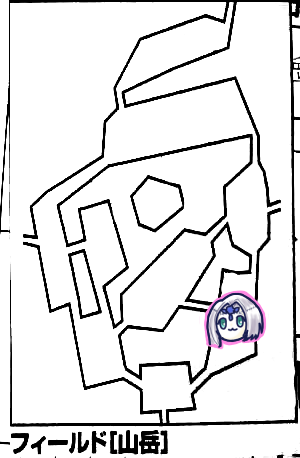

1年以上放置してましたエターナルリプレイ！
今回もオンラインセッションでお送りいたします。
これ書いてる現在コロナでオンセ一択になってしまいましたけど、当時は別の理由でオンセにしてたんですよね。
というわけで前回が2月だったので実に半年以上ぶりのエターナルです。
色々と忘れていて、記憶を掘り起こすところから開始しました。
「前回やったどどんとふの記録にHPMPとか残ってるんじゃないの？」
「と、思うじゃん？読み込めませんでした」
GM「今の君たちのペースね、めちゃめちゃゆっくりです。公式の遅いスピードよりさらにゆっくり。このペースでいくとイベント100%コースです。キャンペーン終わるのに4、5年かかる。まあ好みの問題だから付き合うけど。1キャンペーン10年かけたこともあるからね」
さて、我々は新米騎士の訓練依頼を受けています。
「場所どこだったっけ？」
「山岳だったかな」
「もっと遠い場所じゃなかったっけ」
「えーと(リプレイ見返して)渓谷だ、で今いるのが山岳」
「やばい今日はこれで終わるぞ、3年じゃ終わらないかもしれない」

「山岳でいきなり戦闘してから剥ぎ取りしたんだっけ？」
「忘れた、もういいから先行っちゃおう」
「そういや異貌化判定してないですね」
GM「じゃあそこからやってもらいましょうか」
ブルーローズ「待ってください、私て騎士神ザイアの…あれじゃないですか」
「あれってなんだよ」
ナナシ「神官？プリーストじゃないから神官って言葉が出てこない」
ブルーローズ「プリーストです！ということで会話をして心象ボーナスをもらえないかなとこの数ヶ月間考えてました」
GM「じゃあどんな会話をしますか」
ブルーローズ「何言おうか考えてなかった」
「数ヶ月とは」
ブルーローズ「恐れる気持ちは分かります。しかし私はナイトメアである前に騎士で神官です。あなたたちがどれだけ弱いか分かったでしょう？いずれあなたたちが弱い者を守らなければいけません(ﾄﾞﾔｧ)こう、騎士としてのかっこええ！を集めようかと」
GM「筋が通っているのでボーナス4点でプリーストと知力で判定してください」
ブルーローズ「知力弱いんだよなー」
「魔力撃で殴ると思えば」
GM「目標値は15です」
ブルーローズ「成功しました」
新米騎士「この戦いを生き抜いて立派な騎士になります！」
「そういや新米騎士2人ぐらい気絶してなかったっけ？」
「だからこそ弱いことを実感したんだよ」
ピーター「じゃブラウンの応急処置します」
みぞれ「グリーンの応急処置します」
ピーター「あとウィスパーヒールを2回撃ちたいです。騎士3人とブルーローズととりあえず自分。はい成功。2発目は騎士2人とナナシ、タッシュ、みぞれで。はい成功、9点回復してください」
GM「では移動です。ブルーローズ、左と右どっちに行く？」
ブルーローズ「なんで私？」
GM「ブルーローズにマップ選んでもらわないとボスの居場所がわからないから」
ブルーローズ「…わかりました」
ピーター「不服そう」
ブルーローズ「左…かな」
一同「じゃあ右で」

というわけで東側を回って行くことになりました。
GM「イベント振ってください、みぞれ」
ナナシ「戦闘狂ー」
みぞれ「またそういうこと言う。1です」
GM「何も起きません。自由行動どうぞ」
ピーター「ブルーローズさんはビビッド歌って」
ブルーローズ「びびびー」
GM「残念ながら主はここにいません」
ここ、メモでボスが真ん中にいるのが見えるって書いてあるんだけど、なんで分かったのか覚えてないです。
北へ移動しました。

GM「イベント振ってください」
ピーター「5です」
GM「山岳イベントです」
ナナシ「みぞれの好きなー」
GM「崖崩れが起こります」
みぞれ「好きじゃないです」
GM「ダメージが2d6+12点、16点でーす。アーマーは引けます」
「騎士たちはちょうど半分になるね」
ブルーローズ「じゃあ守ったりしなくても大丈夫ですね」
「全員回復しといて正解だったな」
みぞれ「あ、魔導バイク忘れてた」
「廃車？廃車？」
「そこまでボロくないだろ」
ブルーローズ「ビビッド歌いまーす」
ピーター「ウィスパーヒール、騎士とブルーローズと自分に。9回復で…9？なんで私精神抵抗力見てるんだ、魔力11だよなんで今まで9って言ってたんだ」
タッシュ「酷いサイドブレーキだ」
GM「巻き戻ししませんよ？ここから11回復です」
みぞれ「じゃ探索します。成功、あっ6ゾロ」
GM「洞窟を発見しました、扱いとしては小さな遺跡です」
ピーター「遺跡管理表が欲しくなった」
ちなみに今現在私ことみぞれの中の人が絶賛管理中です。
約1年後の2020/8/30に同じ場所でナナシが洞窟見つけてるのでこれ書いててめちゃめちゃ笑いました。

北へ移動。
タッシュ「イベント3です」
GM「猟師イベントですね」
ナナシ「タッシュ、撃たれる」
GM「誤射が発生しました」
タッシュ「また？山岳で私が振ると、誤射？」
GM「ブルーローズ、11を目標に誤射を避けてください」
ブルーローズ「はい、あの、このあたりの猟師向けに誤射るな危険って注意書きをですねー？成功」
ピーター「チケットもらえるわー」
タッシュ「何回目だろうね」
ブルーローズ「そろそろ年パスが欲しい」
GM「では宿泊チケットをもらえます。『あーごめん熊と間違えちゃったわ』」
ブルーローズ「こういった誤射から民を守るのもあなたたちの務めですよ？」
GM「そういや対象に騎士入れるの忘れてたわ…」
探索で赤い花を見つけました。
GM「見識判定してください」
ピーター「はい。16、成功」
GM「魔女の花でした」
みぞれ「赤い花は都度見識判定が必要なの？」
GM「都度必要。魔女の花は1500Gです」
「たっか」
GM「あと武器としても使えます。という酷い誤記があります」

山岳エリアの一番北へ移動。猟師の集落のあるところですね。
ナナシ「イベント3です」
GM「漁師イベントですね。集落の前に亡骸があって、調べると遺品を入手できます。ではこの亡骸がどこの出身なのか決めてください」
ナナシ「2」
GM「この集落の出身ですね」
「あー」
「目の前ー」
タッシュ「亡骸を持っていけるレベル」
GM「では亡骸と遺品を集落に持っていって星1個もらいました」
タッシュ「いいのかなもらっちゃって」
さっき宿泊チケットもらいましたが、マップ移動で1泊したことになるから泊まらなくていいかってことになりました。
「移動する前に自由行動、探索しましょ」
ピーター「クリった」
みぞれ「クリった。今日出目おかしいな、11」
ピーター「魔女の花ゲットー」
ナナシ「花だけで今回の報酬より既に稼いでるな」

森林エリアへ移動しました。
ここは現時点で唯一ボスが倒された場所になりますね。
ピーター「ということはここはブルーローズらなくてもいいんですね」
ブルーローズ「私をなんだと思ってるんですか」
ナナシ「ボス探知機」
GM「ところで君たち楽譜どれだけ持ってる？」
ブルーローズ「ウルトゥケとオボロンにチェックがついてる」
GM「渡し忘れがあってね、ここのボスが持ってた」
「あの時主倒したことで盛り上がりすぎたな」
GM「楽譜は勇猛なるエッダの楽譜です。この楽譜、使わなければキャンペーンいくらでも伸ばせますからね」
「残りの1枚はハロルド所持、1枚は騎士団にあることがわかってるからこれで存在はコンプですね」
「ウルトゥケどうやって手に入れたんだっけ？」
「ヒントがあるはずだったのに無視してナナシが渓谷の小屋で高い達成値出しちゃって手に入った」
GM「あと2d6×1000ガメル相当の装飾品がありますので今手に入れてください」
タッシュ「そんなダイス振るの怖いなこれ…えいっ！5」
ピーター「5000」
GM「あと称号を得ます。『森の守り手』」
ピーター「これ名誉点いくつです？」
GM「20点。エターナルの前のシナリオでタッシュ以外が20点、オアシスで10点、今ので20で合計50点持ってるはず」
ここで休憩を挟み、森林のイベントから。
ブルーローズ「1です。平和！」
東へ移動しました。

GM「ここは暗いです」
タッシュ「光ります」
みぞれ「イベント振ります。あっ6」
ナナシ「せんとうきょー↑」
みぞれ「ちっちがうもん…」
GM「モンスター振ってください」
みぞれ「6…おかしくないこのダイス」
GM「モンスターは血のように大きな花を持つ植物、根は張っておらず移動します、部位4つ」
タッシュ「部位4つｗｗｗ」
GM「と、グールが2体。こいつは知能があります。外見はグールだけど魔物判定してください」
ピーター「はーい」
グールはグールメイジ。花はブラッディペタル(花びらと本体)。両方弱点抜きました。花が前、グールが後ろにいます。
「まだ渓谷にたどり着いてないから騎士はチアでお願いします」
ピーター「どうします？先制+1いります？」
ナナシ「いらん、はい先制とった」
GM「おれはーらいとにんぐをうつつもりー」
みぞれ「じゃグレネード撃ちます、16」
GM「花びら失敗1、抵抗3、本体失敗」
あれ、ここ5部位になってない？と書いてて思ったけど、花が3～5部位でGM適当に決めるシステムだったみたいですね。今回は花が4つ。なおセッション中花びら花びら言うてましたが花だったみたいです。
みぞれ「12点です、あとはみんなになんとかしてもらえる認識でおk？3m下がります」
ナナシ「後ろのグールメイジ締めに行きたいなー」
タッシュ「前衛と後衛に数拡大ファイアーボール」
ピーター「タッシュ先生ファンブらないでね、先制がファンブるとわたしもファンフる」
タッシュ「フラグ立てるのやめてー、お、11、達成値20です」
GM「抵抗しまーす、むりむりむり、全員抵抗失敗」
タッシュ「じゃあいっくよー、9だからー、16点」
みぞれ「花びら全滅じゃん」
ピーター「補助行動でリーンフォース使います、数拡大でフレイムアロー3発だね」
「魔法のバーゲンセールだな」
GM「このレベル帯になると戦士が暇になり始めるからね。なんかこのパーティー戦い方が軍隊なんだよなーランチャー撃って魔法撃って残りに戦士が突っ込む」
ピーター「振ります、19」
GM「本体だけ抵抗」
ピーター「17ぴった！」
GM「グールメイジが死にました」
ブルーローズ「殴るよ！トンファー魔力撃で、16」
GM「回避失敗」
ブルーローズ「22点」
ナナシ「あ、吹っ飛んだ」
タッシュ「あれ？花って本体は攻撃できないんだなこれ。まあいいか倒したし」
ナナシ「おれなにもやってない」
ピーター「先制取っていただいた」
タッシュ「これでね、3レベル先になるとまた状況が変わってくるんだ」
適当にはぎ取って北へ移動します。

ピーター「イベント4です」
GM「森林イベントでーす」
ピーター「2」
GM「みんなー！」
ピーター「え？」
GM「危険感知判定をしよう、目標値9で」
ブルーローズとタッシュが失敗。
みぞれ「これ魔導バイクは」
GM「バイクはいいよ。はい後ろの3人も判定して」
騎士1人失敗。なんか辻褄が合わないことが書かれてて誰が失敗したかわからなくなってました。
ピーター「出目なんだったの？」
ナナシ「1と4」
ピーター「運命変転しちゃえ」
GM「失敗した人は血を吸われるけどタッシュ先生は吸えないからー、ブルーローズちゅーちゅー。蔦がブルーローズにからみつき吸盤が血を吸う」
「エロ同人的な」
「エロ同人ちゃうわ」
ブルーローズ「エロいことするつもりでしょうエロ同人みたいに…蚊に刺されたみたいです」
探索で腐葉土をゲット。
ナナシ「土たまるなーピーター重くない？」
ピーター「だいじょうぶだいじょうぶー、重量ルールあったら魔法の鞄とか言い張るから」
マップ移動して渓谷へ。

GM「さて目的のエリアにやってまいりました。ここで3回戦闘すればクリアです」
タッシュ「イベント5」
GM「ミッションにより5は戦闘です」
タッシュ「モンスター種別は3」
GM「身長4mのかろうじて人型に見える右腕が肥大した怪物ーが1体、3部位です」
「また部位持ちかー」
「このレベルだもーん」
GM「あとは身長4mと会話してる爬虫類がいます」
ピーター「汎用蛮族語？精霊語？」
GM「魔神です。あとは身体がライオン、コウモリの羽、サソリの尻尾と老人の顔を持つ3mのモンスターが1体」
ピーター「まんてぃこあーーーそいつは複数部位持ちではなく？」
GM「2部位ですね」
ピーター「じゃマンティコアからセージ判定します」
GM「弱点抜きました、レッサーマンティコアです。爪と尻尾の2部位」
タッシュ「こいつ色々持ってるな、多彩すぎ」
GM「都合上深智魔法が使えます」
「タッシュ先生と同じですね」
ピーター「次、4mのやつ」
GM「ヴァルブレバーズです。胴体、大腕、小腕の3部位」
ピーター「ラスト爬虫類」
GM「ギルドレックです、弱点抜きました。レッサーマンティコアが後ろ、あとは前にいます」
ナナシ「先制15？楽勝、ケンタウロスレッグつかいまーす」
GM「先制1上がるんだっけ？」
ナナシ「敏捷値が上がるから2上がります。はい22余裕じゃーん」
みぞれ「ヴァルブレバーズ弱点抜きたかったねー魔法ダメージ+2点」
ピーター「すいませんでしたァー」
みぞれ「グレネード撃ちまーす17」
GM「ヴァルブレバーズ胴体失敗、大腕失敗、小腕クリティカル、ギルドレック失敗」
みぞれ「12点です、なんでいつも威力だけ低いかなー、うーん、追撃します、魔導バイクでグレラン撃ちます…ファンブル、泣きながら下がります」
タッシュ「プランA、寝かす」
ピーター「スリープクラウドか」
タッシュ「で、後ろを殲滅する。プランB、ファイアーボールを前後に撃つ。全滅はできないしちょっと微妙。全員スリープクラウド入れば転倒状態になる」
ピーター「起きるって補助動作でしたっけ？」
ナナシ「あれみぞれちゃんどうしたんだっけ？」
みぞれ「グレランファンブった。きっとさっきの崖崩れでいかれたんだ」
GM「そういうのすき」
ピーター「麻痺の矢持ってきてるからー、それが入れば補助動作できなくならない？2本しか持ってきてないけど…スリープクラウドでいいかなー確実化で」
タッシュ「確実化！？言っとくけどスリープクラウド12くうよ」
ピーター「あっそれはごめんなさい取り消すわ」
タッシュ「まあスリープクラウドでいいか」
ナナシ「甘んじて受けよう」
タッシュ「スリープクラウドを敵の前衛に確実化で。大丈夫、まだMPは72ある」
ピーター「さすがフロウライトさん」
タッシュ「出目が酷い、3」
ピーター「よかったですね確実化」
タッシュ「20、こっちを採用」
ナナシ「本当にそっちでいいんですかー」
みぞれ「またそういうこと言うー」
GM「ヴァルブレバーズはコア部位あるから判定はここだけで。いきますよー」
タッシュ「寝て」
GM「クリティカル」
タッシュ「まじかよおまえ」
GM「ギルドレックはかかりました」
タッシュ「俺は知らない、俺はやることやった」
GM「おれもうっちゃうよースリープクラウド」
タッシュ「撃てないよ」
GM「あっほんとだ1レベルたりない」
ピーター「フレイムーアロー撃った方がいいかー、複数部位がなければ転ばせるんだけど…寝てるやつ抜かして5倍がけ、最悪後ろでずっと札投げてよう。えーと19」
GM「ヴァルブレバーズコア部位だけで抵抗します、出目1、2」
ピーター「おっと…人間じゃないですよね」
タッシュ「まじんまじん」
GM「部位持ちの判定どうしようかな、一括でやるかな」
ピーター「部位によって抵抗違うとかないんですか」
GM「ないからこれでブレバーズはまとめて失敗、レッサーマンティコアも失敗」
ピーター「じゃダメージを…ひっく、13、あとヴォーパルウェポンをここはブルーローズにかけよう」
ナナシ「ブルーローズ代理でヴァルブレバーズの胴体殴ります。キャッツアイいれるかー。マッスルベアトンファー魔力撃、19」
GM「回避できませーん」
ナナシ「第一回！24！」
ピーター「+1した？」
ナナシ「してる！」
GM「このままいくと死んじゃうかなー、かばいます、大腕がぶっとびます」
ナナシ「追撃を胴体に！ふぁんぶるー」
タッシュ「やばいよやばいよー」
みぞれ「みんなでファンブルしすぎでは」
ピーター「どうする？騎士全員突っ込ませてナナシに抜けさせる？」
タッシュ「小腕の小刻みな攻撃でこいつらやられるよ」
みぞれ「騎士()」
ピーター「HP24ですよねー、最大攻撃力考えると…耐えるんじゃない？」
タッシュ「と思うじゃん？小腕には連続攻撃がありまして…事故らなければいける？」
ピーター「首絞められなければ二重の被害が…」
ナナシ「全力攻撃でワンチャン死ぬんじゃね？運命変転あるし」
タッシュ「修正5しかないよ…あれ？5？ブレバーズ回避6だからいけるじゃん？いや小腕だけ回避8だこいつ」
ナナシ「なら本体を倒しに行こうか」
ピーター「じゃブラウンさんブレバーズ本体殴りまーす」
タッシュ「全力攻撃はあるけど…」
ナナシ「どうせ避けれないから」
ピーター「9、いい目！14」
GM「回避できません」
ピーター「攻撃しまーす、出目5」
タッシュ「バスタードソード？3、追加ダメージで7点、全力攻撃4足して11、防護引いて3点ダメージだね」
ナナシ「お、いいじゃんいいじゃん」
タッシュ「グリーンいきます」
GM「回避できません」
タッシュ「ダメージは…おっと、クリったんじゃね？」
ナナシ「クリった」
タッシュ「これで全力足して…21点！あっ死んだ、グリーンちゃんやる！数の暴力！崩れかけた作戦が持ち直した」
ナナシ「じゃ後ろいきまーす、レッサーマンティコアにウィップで挑発攻撃、首狙い！かっらっのーデーモンフィンガーとキャッツアイ」
タッシュ「デーモンフィンガーって誰の技？」
ナナシ「練体士。命中+2」
タッシュ「そんな組み方してきてるんだ」
GM「これ重要なバグがあってね、15レベルのドラゴンでも首絞められちゃうんだよね」
ナナシ「命中だけで20、4引いて16、避けてよー！」
ピーター「レッサーマンティコアさん応援されてますよ」
ナナシ「間違えたわ」
GM「まずレッサーマンティコアに首があって呼吸してるかどうかですがー、えーと、してる判定です、GMが判定しました。はいダメでした絡まりました」
ナナシ「やったー！はい、10、クリったー、21点ダメージ」
ピーター「魔力撃並にダメージ出てますね」
GM「絡み攻撃って改めて見るとダメージと絡みと両方入る気がするけどダメージ入るって見当たらないんだよね、入らないとも書いてないしどっちなんだこれ」
しばし会議が開催。
GM「もういい！見つからない！ダメージは適用します、ダメージを与えないとする根拠がない！」
タッシュ「パープルは待機、寝てるやつを起こすんじゃない」
パープル「すいませんでしたー！」
GM「絡み攻撃を解こうとすると…？」
ナナシ「下半身は解きにいけるかもしれないけど、上半身は挑発攻撃が入ってるから、攻撃してください」
GM「おっと？挑発攻撃したら絡みって取れないんだ？バグでは？」
ナナシ「おれそれを狙ってこの攻撃組んだんだけど…(るるぶ検索)」
タッシュ「やった本人が心配になってきてる」
GM「じゃあ絡み攻撃はとかないことにしてー、キャッツアイ、ビートルスキンを使用してー、呪文は使えないから殴りまーす、これ絡めてきてる相手にペナはないんだよね」
ナナシ「ないです」
GM「3ゾロで…16」
ナナシ「22だからブレイドスカート、13点ダメージ」
GM「5点くらいます、じゃあ下半身…こいつビートルスキン部位全部に乗るの？…あーもう、部位は別々にする！」
タッシュ「書いてあった、個別にするけど全ての部位が個々に練技を使用することはできるんだけどマンティコアは下半身は使えない」
GM「あーもう全部の部位が使えることにします！キャッツアイビートルスキンを下半身も使う！ナナシを狙います、12」
ナナシ「ほいブレスカ。クリティカル、ダメージは13、あと首絞められてるから1d6点の魔法ダメージね」
GM「窒息ダメージでコア潰れたからマンティコア死亡」
ナナシ「なんで魔法ダメージで死亡するのかわからないんだけど」
みぞれ「私もわからないんだけど」
GM「ほんとだ、でも言っちゃったから巻き戻ししない」
タッシュ「あ、わかった、マンティコア練技使えるのは上半身だけど部位ごとにかけなきゃいけない」
タッシュ「じゃ過激派パープルさん、両手でどうぞ」
ナナシ「じゃパープルさんいくよー、ギルドレックに攻撃。9」
GM「えーと、寝てるから回避できない」
ナナシ「あ、クリった」
タッシュ「起きないかもしれない」
ナナシ「23点ダメージです」
ブルーローズが削れたギルドレックを始末して戦闘終了。
パープルのイキリ度が上がった！
剥ぎ取り、探索、回復をして北へ移動。

ナナシ「イベント6！種別は1！」
GM「普通の服を着ている村人のような青白いモンスターが3体」
ピーター「セージ判定しまーす」
GM「ブラッドサッカーです。弱点抜きました」
ブルーローズ「弱点回復+3？キュアハート撃ちたーい」
ナナシ「セーフ、15、先制取りました」
ピーター「3体ならチアでいい？」
みぞれ「キャッツアイ入れてショットガンバレット打ちます。殺意高い、命中21」
GM「全員回避失敗」
みぞれ「また威力低いー、11点」
タッシュ「ファイアーボールぶっぱなします。ふぁいえる！ふぁんぶる！ふぁいえる！」
GM「MP減らしてるね？」
タッシュ「ふぁいえる！」
ファンブルでおかしくなった模様。
ナナシ「いったんブルーローズ前に出しておくか」
ブルーローズ「キュアハートしないのか」
ナナシ「ブルーローズに殴らせます、魔力撃トンファーわっしょい、15」
GM「回避できませーん」
ナナシ「わっしょい、21点ダメージ！追撃ファンブル！いぇぁ」
タッシュ「別に手を抜かなくてもいいんだよ、たしかにさっきよりは楽だけど」
ピーター「範囲攻撃つっこめなくなっちゃったんだよなー」
ナナシ「ブルーローズがつっこむから」
ピーター「フレイムアローを撃ちます。傷ついてるやつに」
GM「抵抗します、無理です」
ピーター「15点です」
GM「はいしんだ」
ナナシ「ナナシいくよー、ウィップで挑発攻撃、部位指定しません、うほっ15…(ダイス目1、3)」
GM「ギリギリ失敗、爪に絡みました、命中ー2になるけどどうする？」
ナナシ「え、ならないよ、部位はランダムだから」
GM「あ、武器や盾は爪じゃないか、腕になるから、振り直して」
ナナシ「3」
GM「腕ですね」
ナナシ「13ダメージです」
タッシュ「騎士団ズどうしようかね」
新米騎士「行かせてください！」
タッシュ「騎士突っ込ませるのあぶないよなー」
新米騎士「やれます！」
ピーター「じゃ行かせるか、死にゃしないでしょ、ブラウンつっこませてピンピンしてる方を全力攻撃、命中14」
GM「回避」
ピーター「すかっ」
ナナシ「ぱーぷるぱーぷるぱーぷるぱーぷる」
GM「目標は」
ナナシ「ぴんぴんしてるやつ」
GM「回避」
タッシュ「グリーン前に進んで減ってる方に攻撃、12」
GM「回避ー」
みぞれ「まあさっきが出来過ぎてたよね」
GM「ブレードスカートって補助動作扱い？」
タッシュ「またそういうことを」
みぞれ「どういうこと？」
GM「ナナシのこいつのスキルで補助動作封じられるかなって」
タッシュ「補助動作とは言えないかな…」
GM「じゃ特殊能力で攻撃、これはブレードスカートで反撃できません」
「えっそうなの」
GM「近接攻撃なので(←？)噛みつきます。14」
ナナシ「なんということでしょう。25」
GM「もう1匹は…パープルに噛みついてやろう」
ナナシ「知能低いけど選べるんですか」
タッシュ「イキがよさそうに見えたんだよ」
GM「その辺はノリで。定義がガバガバなゲームだから勘弁して。13」
ナナシ(パープル)「14、回避」
「イキリが直らねぇ」
ナナシ(ブルーローズ)「ぴんぴんしてる方を攻撃します。18」
GM「回避失敗」
ナナシ(ブルーローズ)「トンファーでどん。23点。追撃ー」
GM「回避失敗」
ナナシ(ブルーローズ)「20点」
GM「ぴったり消えるね」
ピーター(ブラウン)「両手武器全力攻撃でブラウンさんが動きます」
GM「回避しました」
タッシュ(グリーン)「両手全力。14」
GM「出目7で回避します。ほい7」
ナナシ(パープル)「両手で全力攻撃」
GM「命中しました、パープルのイキリが止まりません」
ナナシ(パープル)「血祭りだよ！16！ひゃぁはー！」
みぞれ「ガラ悪いなぁ」
ナナシ「攻撃しまーす。出目3！？14」
GM「回避しました」
ピーター「今挑発攻撃宣言した？」
GM「したことでいいよ」
GM「吸血鬼の牙でナナシを攻撃」
ナナシ「ま？回避できない」
GM「11点物理ダメージ、ナナシ防護点いくつ？」
ナナシ「3」
GM「じゃ8点回復します、再生で回復して次ラウンド」
ブルーローズが仕留めて終わりました。
戦利品
ピーター「戦利品漁ります。2」
GM「ピーター終了(2～8がなにもなし)」
ピーター「梅干しみたいな顔をしています」
タッシュ「よん」
GM「2倍になった。何もありません」
みぞれ「ブルーローズはびびび？じゃ剥ぐ。あクリった」
GM「穢れた灰です」
ブルーローズ「びびびー魔力回復ビーム」
ナナシ「探索します」
GM「汚れた骨です」
うさちゃん鞄が汚されていく。
中央へ移動。

ナナシ(ブルーローズ)「5」
「わぁ3連続戦闘」
みぞれ「今更だけどこれ集落調べて戦闘した場合は新米騎士の訓練回数にカウントする？」
GM「する」
ナナシ「いくわよー！ふるわよー！5」
GM「全身から電をはなつ巨大な鳥が1体、3部位、前衛です。足元に蔓が這っている植物、が2体、後衛です」
セージ判定の結果、サンダーバード(嘴×1、翼×2)、ビッグアーチャーと判明。どちらも弱点は抜きました。
ピーター「ビッグアーチャー後衛にいると射程届かないけど大丈夫？」
GM「前衛にします」
ピーター「配置後に変えるとな。まあいいです」
ナナシ「先制とりますか」
ピーター「+1いる？」
ナナシ「いる」
ピーター「1点がいい？2点がいい？」
ナナシ「2点」
ピーター「500ガメルだよー！」
ナナシ「…そうですか。じゃケンタウロスレッグも使って、ファンブル以外が成功、はい25」
みぞれ「グレネードーんいきます…ぐ、じゅう、に」
GM「ビッグアーチャー1匹だけファンブル、あと抵抗」
みぞれ「16点です。続いてグレラン撃ちます、これライダー技能だから、MP軽減入らんわな、15」
GM「ビッグアーチャー両方失敗」
みぞれ「10ダメージです、で下がります」
タッシュ「ファイアーボール確実化で放り込みます、7と10、10を採用、19」
GM「サンダーバード抵抗、ビッグアーチャーは失敗」
タッシュ「16点」
ナナシ「サンダーバードの羽燃えかすやん」
ピーター「ファイアブラスト撃ちます、17」
GM「サンダーバード抵抗、植物ファンブル、クリティカル」
「なんでそう極端なの」
ピーター「14点です」
GM「はいビッグアーチャーしにました」
みぞれ「れ？なんでビッグアーチャー片方残ってるのかわからない」
ナナシ「俺の計算だと7残ってる、焼き鳥は1」
みぞれ「同じく」
GM「いいよ撃破で」
残りの瀕死焼き鳥に新米騎士が特攻。
パープルとブラウンは回避され、グリーンが当てて撃破。
みぞれ「探索しようかな」
ナナシ「探索してほしい(集落戦闘目的)」
みぞれ「通常探索できなかったっけ」
GM「できるね」
ナナシ「でもー？」
みぞれ「通常探索します」
ナナシ「ぷしゅーーー」←不服そう
タッシュ「これ集落探索で戦闘したら星増えるの？なら考える」
GM「増えないよ」
GM「さて、このまま帰ることもできるけど帰るまでが探索にしてもいいです」
「帰ります」
ゼノヴィア「君たちに頼んでよかった、いい面構えになった」
GM「ゼノヴィアはこれで2回目か、と楽譜をぽんぽんします」
新米騎士「これ先輩たちがいなくてもよかったんじゃね？」
「おうそれなら今からお前らだけで渓谷行って来いや」
「針！針がー！」
GM「ミッションクリアで村の防衛ポイント+3されます」
「また城塞都市化への道を進んでしまったか」
次のクエストについて。
現状受けられるものは
・シドからの討伐依頼
・新米騎士クエスト3回目
・ライダーギルドの依頼(魚釣り)
・守りの剣の探索
「かけらが遊んでるから守りの剣やりたいよねー」
「ハロルドの店はまだなんだっけ」
GM「商業値が足りません。街が安全にならないと」
「安全じゃん防衛都市」
「どっちかっていうと打って出る方だから」
「商業値、施設でなんか追加で上がるやつなかったっけ」
「交易宿じゃねーかな、ミッションごとに商業地と名声値が1ずつ上がる」
「あと2ポイントかー、次で商人引っ掛けて来ればハロルドの店が建つね」
「とりあえず新米騎士を受けて場所振るだけ振ってみましょ」
GM「新米騎士ラストですね。その出目だと台地になります。台地って出てる？」
ピーター「出てない、ワンチャン隣に配置されれば」
GM「ころころ。セズウィック村の東になりました」
ピーター「よっしゃ。シドから地図情報買います」
GM「ブロック番号×100ガメルになります」
ピーター「じゃ200ガメルだ」
みぞれ「なんだこれ、南北に分かれてますね」
GM「主はここにいます、ベラドンナです」
タッシュ「これ主倒す場合北から回らなきゃいけないやつ？北は沼地か」
ピーター「見識判定します、成功しました」
GM「情報見ていいです」
「げっLV12、また毒だ」
「またタッシュ先生の出番か？」
「前回と違って普通に攻撃してくるから無理だぞ」